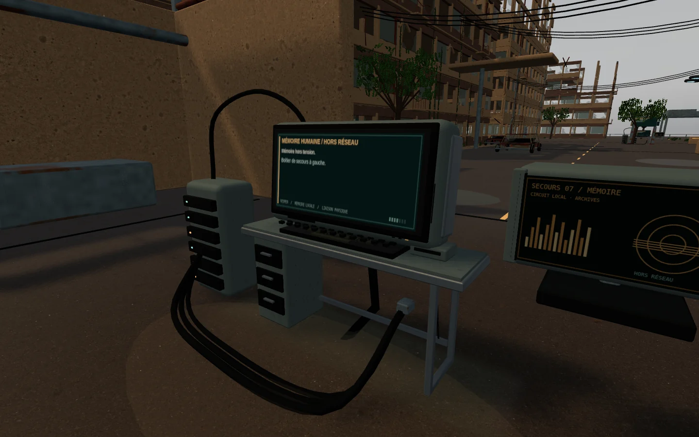
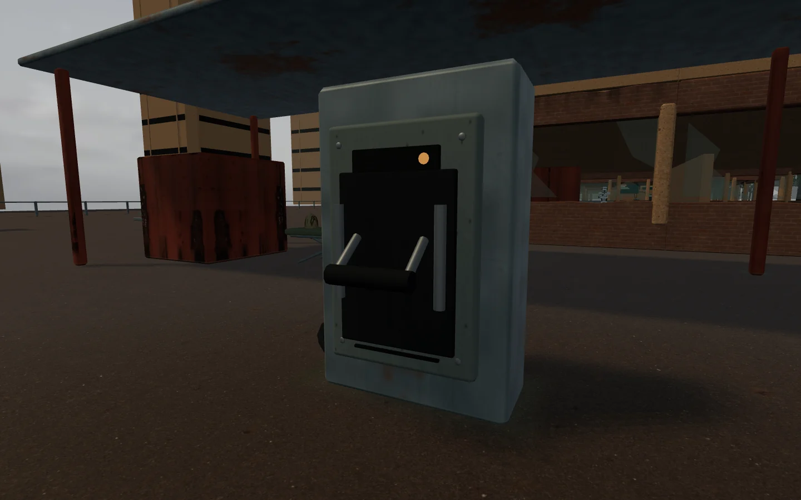
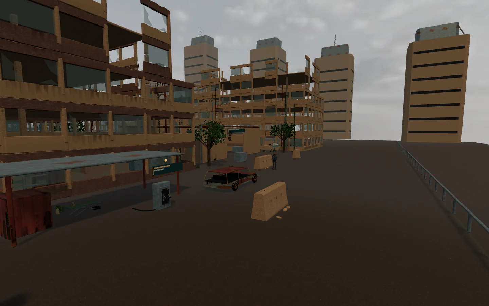

3.63.5 · CAPTURES DU JEULe matériel de Vesper.
Acier brossé, peinture technique, caoutchouc et toile. Des équipements lisibles, conçus pour les interactions du scénario.

Ordinateur de scénario : coque protégée, clavier, connecteurs et mémoire locale.
Sectionneur de circuit : poignée articulée, protection et voyant d’état.
Béton et asphalte photographiques : relief et rugosité, dans le niveau jouable.